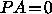

Karma has a facility to annotate 2-D images with lines, boxes, and other simple figures, as well as strings of text. Commands to draw these various things are stored in text files which are read in by selecting the ``Load Annotations'' option from the ``Overlays'' button menu (see §2.20). The names of annotation files must have the extension ``.ann'' or ``.ANN'' for Karma to recognize them. Annotations read from a file can be removed from the image with the ``Remove'' buttons in the Annotation File Loader. Often the best way to produce a good set of annotations for a particular image is to see what an annotation file produces on the screen, then modify the file contents, remove the annotations, and reload the file, until everything appears satisfactory.
Note the annotations descibed here only work with 2-D images, or 2-D slices of 3-D images. For information on marking rendered 3-D images with line segments in <xray>, see §5.4.
Annotation file syntax is very simple. Commands are listed in the
order they are to be performed, separated by carriage returns. Each
command is followed by one or more arguments, which may be separated
with commas, spaces, or tabs. Comments may be placed in the
annotation file by using a comment character (#). All text occuring
after a comment character on the same line is ignored. Blank lines
are also ignored. The syntax is case-insensitive: UPPER, lower or
MiXeD cases are all valid. Commands can be extended over more than
one line of text by placing a continuation character ( ) at
the end of each line to be continued. Any text appearing after the
continuation character on the same line is ignored. Continuation
characters do not continue comments, only command strings; therefore,
any (
) at
the end of each line to be continued. Any text appearing after the
continuation character on the same line is ignored. Continuation
characters do not continue comments, only command strings; therefore,
any ( ) following a (#) is ignored. If the line following
a continued line is blank or a comment line, the continuation is
terminated.
) following a (#) is ignored. If the line following
a continued line is blank or a comment line, the continuation is
terminated.
Note: The parser ignores any spaces, tabs, or commas preceding ``useful'' text on a command line. Consequently, a space should be placed prior to the continuation character if the text beginning on the following line is not to be considered part of the last argument on the current (continued) line. The reason for this is to allow a long argument (e.g., a really long font name) to be broken up if necessary without being treated as two separate arguments.
There are three types of commands: those which draw objects, those which change attributes of objects, and non-graphical commands. A complete list of currently implemented commands is given below, with syntaxes and brief descriptions. In the syntax lists, the command is given in CAPS (with occasional synonyms in parentheses). Required arguments follow in <angle brackets>, and optional arguments or argument groups in [square brackets]. The brackets are for illustration only and should not be typed.
At present there is only one of these, but it is quite useful.
The filename can include the `` '' notation, as well as other
simple Borne Shell-like expansions of environment variables using the
'' notation, as well as other
simple Borne Shell-like expansions of environment variables using the
$variable, ${variable} and ${variable:-word}
notations.
Note: Filenames are case-sensitive on many operating systems (e.g., Unix). Also, when using multi-level inclusion (including files which include other files, etc.), be careful with relative pathnames. The parser's working directory remains that of the original file; thus, if file1.ann has INCLUDE subdir/file2.ann and that file has INCLUDE file3.ann, Karma will look for file3.ann in the directory containing file1.ann, not in subdir/. Unless all the files are in the same directory, it's probably safer to use absolute pathnames or environment variables.
Attributes are general properties of objects. An attribute command sets one of these properties for all objects drawn after, until the attribute is changed by another attribute command. Each has an initial value it is assigned when the application first starts.
Object commands draw specific objects over a displayed image. These include text strings as well as figures made up of dots and lines.
The locations of drawn objects can be specified in three types of coordinates: world (W), relative (R), and pixel (P). World coordinates are those indicated by axis labeling, e.g., right ascension and declination (or velocity, in a position-velocity map) -- but be careful about coordinate units, since annotations use the units specified by the image header (e.g., the FITS standard default units for right ascension are degrees, not hours, and for velocity are m/s, not km/s!). Relative coordinates range from 0 to 1 inside region bounded by the image axes, increasing from the lower left corner of the image. Pixel coordinates count screen pixels explicitly in the entire display region (including outside any labeled axes), beginning in the upper left corner; note these are not image pixels, but rather the physical pixels of the computer monitor screen. Image pixel coordinates are not a usable coordinate type here, unless no world coordinates are defined for the image, in which case Karma will use the image pixel coordinates in place of world coordinates. For most purposes involving the marking of image features, world coordinates are the best choice, though relative coordinates are occasionally good for marking a particular part of the display region regardless of image projection. Pixel coordinates, by their inflexible nature, are as a rule not very useful. The three coordinate types are specified in an argument list with the letters W, R, and P.
In several of the object commands below (DOTS, LINE, CLINES, DLINES, VECTOR), different geometric parameters of the object can be specified in different coordinate types, and so a coordinate type argument may precede more than one coordinate pair in the argument list. However all coordinate type arguments are optional; they are only necessary to override the current value -- either one specified earlier in the argument list, or the default coordinate type selected with the COORD attribute command.
WARNING: At present, rotatable figures (boxes, crosses, and ellipses) have a tendency to appear distorted from their ``real'' appearance in curved world coordinates, e.g., maps of the sky. Proper projection of geometric objects into world coordinates is a nontrivial exercise and has been deferred.
Standard Postition Angles are generally defined in the Cartesian sense where  specifies {}, specifies {}, and so forth. In a coordinate system where X increases from left to right, and Y increases from bottom to top, PA will increase in a counter-clockwise direction. However this will be reversed if the X increases from right to left, or Y from top to bottom (though not both). So be careful! To summarize: PA is measured CCW from right in R coords, and CW from right in P coords. How it is measured in W coords depends on the coordinate system: in many cases, it will be the same as R coords, but this is not always true! For example, most astronomical maps of the sky have the X coordinate increasing toward the left, in which case, PA will be measured CW from left!
Sky Position Angles are for the astronomers. Usage of this convention in annotations assumes two things: (1) a map of the sky is being displayed, with the X coordinate increasing from right to left, and the Y coordinate increasing from bottom to top, i.e., north = up, south = down, east = left, west = right; and (2) position angle is measured from north through east (up through left). The convention is followed regardless of whether the coordinate type is W, R, or P. So unlike STANDARD position angles, SKY PAs retain their appearance regardless of coordinate type. This same system can be used with Ecliptic and Galactic coordinates as well as Equatorial, though the referent points up in all cases, toward the grid's north pole. However unless the image projection is flat, will only point exactly north at the image projection center (but if the image covers a small piece of the sky and is not close to a coordinate pole, the error will be small). Generalizing this to be correct in all parts of the image is a future project.
Two sample annotation files, m42.ann and m42_include.ann, have been provided to illustrate the functions and concepts outlined above. To use these example files properly in Karma, it is necessary to load the FITS image m42_ha.fits to set the world coordinates. For best image appearance, select a square root intensity scale from the Intensity Policy popup, and a 99.99% intensity range from the IScale popup.
These example files and some image data may be found at:
ftp://ftp.atnf.csiro.au/software/karma/data/annotations/
####################################################################
#
# SAMPLE KARMA ANNOTATION FILE M42.ANN
#
# *** to be used with M42_*.FITS images ***
#
####################################################################
# Comments are preceded by a ``#'' character
#
# All of the commands names below are given in CAPS for readability,
# but they could just as easily be lower case.
#
# World coordinates here are decimal degrees of Right Ascension and
# Declination (in accordance with the FITS standard).
COORD W # These are the attribute settings at startup time.
PA STANDARD # If no annotation files loaded prior to this one
COLOR GREEN # have changed any attributes, then these commands
FONT hershey14 # are reduntant.
# Label the image near the top. Use relative coordinates to fix
# the position regardless of image zoom.
#
COLOR WHITE
TEXT R 0.1 0.9 THE ORION NEBULA
# Change font to something a little smaller for other labels.
FONT hershey12
# Mark the four Trapezium stars with blue circles, and connect them.
# Use world coordinates for these markers and name label.
# Since COORD is currently set to W, specifying W coords in the
# argument lists of the objects below is not necessary.
#
# Note W coords are in degrees for consistency with coordinate
# information in the FITS image header, even though RA is labeled
# in hours by Karma. Note also the TEXT string is continued onto
# another line. The leading space is ignored, but a trailing space
# after "Trap" would not be. The commas in the CLINES command
# string are not necessary, but make it easier for a human to read.
#
COLOR BLUE
DOT 83.81613 -5.38706 # Theta 1A Orionis; HD 37020
DOT 83.81738 -5.38494 # Theta 1B Orionis; HD 37021
DOT 83.81875 -5.38972 # Theta 1C Orionis; HD 37022
DOT 83.82208 -5.38778 # Theta 1D Orionis; HD 37023
CIRCLE 83.81613 -5.38706 0.0005 # Theta 1A Orionis; HD 37020
CIRCLE 83.81738 -5.38494 0.0005 # Theta 1B Orionis; HD 37021
CIRCLE 83.81875 -5.38972 0.0005 # Theta 1C Orionis; HD 37022
CIRCLE 83.82208 -5.38778 0.0005 # Theta 1D Orionis; HD 37023
CLINES 83.81613 -5.38706, 83.81738 -5.38494, 83.82208 -5.38778, \
83.81875 -5.38972, 83.81613 -5.38706
TEXT 83.84 -5.38 ``Trap\
ezium''
# Indicate the star Theta 1C Orionis, source of much of the UV flux
# ionizing the gas in the nebula. Use a mixture of world and
# relative coordinates to fix the label on the screen when zooming.
#
COLOR YELLOW
LINE W 83.81875 -5.38972 R 0.6 0.1
TEXT R 0.6 0.10 Theta 1C
# Mark the region imaged by the HST mosaic released in 1995
# (http://oposite.stsci.edu/pubinfo/pr/95/45.html).
#
COLOR RED
BOX 83.86867 -5.44977 83.74646 -5.31922
TEXT 83.86867 -5.31922 HST
# One transverse light year at a distance of 1500 ly subtends 0.038
# degrees. At a declination of -5.39 degrees, this is 0.0382 Right
# Ascension degrees.
#
COLOR GREEN
CBOX 83.91196 -5.49598 0.0382 0.038
CROSS 83.91196 -5.49598 0.0382 0.038
TEXT 83.88 -5.49598 1 ly^2
# Here is a series of disconnected lines, for no very good
# reason. The last continuation character is ignored because
# the following line is empty.
#
COLOR LIGHT GRAY
DLINES R \
0.96 0.05 0.99 0.05, 0.96 0.10 0.99 0.10, 0.96 0.15 0.99 0.15, \
0.96 0.20 0.99 0.20, 0.96 0.25 0.99 0.25, 0.96 0.30 0.99 0.30, \
0.96 0.35 0.99 0.35, 0.96 0.40 0.99 0.40, 0.96 0.45 0.99 0.45, \
0.96 0.50 0.99 0.50, 0.96 0.55 0.99 0.55, 0.96 0.60 0.99 0.60, \
0.96 0.65 0.99 0.65, 0.96 0.70 0.99 0.70, 0.96 0.75 0.99 0.75, \
0.96 0.80 0.99 0.80, 0.96 0.85 0.99 0.85, 0.96 0.90 0.99 0.90, \
0.96 0.95 0.99 0.95, \
# Change default coordinates to relative. In the DLINES command
# above, the default was world coordinates, so the R was necessary
# to specify something else.
#
COORD R
# Here are a of couple vectors.
#
COLOR CYAN
VECTOR 0.1 0.25, 0.05 0.05
VECTOR 0.1 0.30, 0.05 0.05
COORD W # Change back to world coordinates as the default.
# Here are three plain, adjacent ellipses. No position angle
# parameter is given, so PA=0. However this applies to the first
# semiaxis given, not necessarily the larger of the two. With the
# semiminor axis listed first, these ellipses have an effective
# position angle of 90 degrees (in the ``standard'' system -- see
# below).
#
COLOR ORANGE
ELLIPSE 83.9151 -5.3978 0.002 0.005
ELLIPSE 83.9111 -5.3978 0.002 0.005
ELLIPSE 83.9071 -5.3978 0.002 0.005
# Put a dot in the center of all three orange ellipses, using a
# single command.
#
DOTS 83.9151 -5.3978, 83.9111 -5.3978, 83.9071 -5.3978
# Include another annotation file, which has examples of some
# rotatable objects.
#
INCLUDE m42_include.ann
####################################################################
#
# END OF SAMPLE KARMA ANNOTATION FILE M42.ANN
#
####################################################################
####################################################################
#
# SAMPLE KARMA ANNOTATION FILE M42_INCLUDE.ANN
#
# *** to be used with M42_*.FITS images ***
#
####################################################################
# Draw rotated crosses, cboxes, and ellipses with standard PAs.
PA STANDARD
# (The W's aren't actually necessary since COORD is still set to W.)
COLOR AQUAMARINE
CBOX W 83.72204 -5.45408 0.02 0.008 10
CROSS W 83.72204 -5.45408 0.02 0.008 10
ELLIPSE W 83.72204 -5.45408 0.01 0.004 10
COLOR MAGENTA
CBOX R 0.8 0.15 0.05 0.03 10.0
CROSS R 0.8 0.15 0.05 0.03 10.0
CBOX R 0.8 0.15 0.10 0.06 10.0
ELLIPSE R 0.8 0.15 0.05 0.03 10.0
COLOR VIOLET
CBOX P 75 200 50 20 10
CROSS P 75 200 50 20 10
ELLIPSE P 75 200 25 10 10
# Draw rotated crosses, cboxes, and ellipses with ``sky'' PAs.
PA SKY
COLOR TAN
CBOX W 83.7147 -5.3007 0.02 0.01 10
CROSS W 83.7147 -5.3007 0.02 0.01 10
ELLIPSE W 83.7147 -5.3007 0.01 0.005 10
COLOR KHAKI
CBOX R 0.88 0.70 0.08 0.04 10
CROSS R 0.88 0.70 0.08 0.04 10
ELLIPSE R 0.88 0.70 0.04 0.02 10
COLOR GOLD
CBOX P 450 220 44 22 10
CROSS P 450 220 44 22 10
ELLIPSE P 450 220 22 11 10
####################################################################
#
# END OF SAMPLE KARMA ANNOTATION FILE M42_INCLUDE.ANN
#
####################################################################